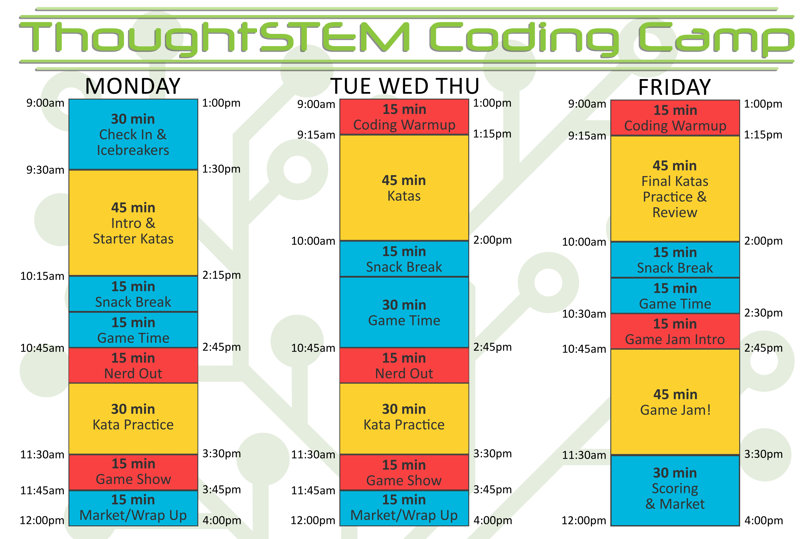

3 Half Day Camp Schedule
3.1 Schedule

3.2 Schedule Breakdown
Here is some detailed information on how each block of time on the schedule above is expected to run. But first:
3.2.1 Day Differences
As you see on the visual schedule above, the schedules for Monday, Tuesday/Wednesday/Thursday, and Friday are all slightly different. The reasons for this are straightforward:
Additional time for check-in is allowed on Monday, since all students and staff will stay at the pick up location until 9:15 on the first day.
Also, the first activities are icebreakers, for obvious reasons!
For Tuesday/Wednesday/Thursday, these extra 15 minutes go into game time.
On Friday there is GAME JAM! The last hour and a half are spent on this.
3.2.2 Check-in
AM – mon 8:45am-9:15am & tue-fri 8:45am-9:00am
PM – mon 12:45pm-1:15pm & tue-fri 12:45pm-1:00pm
It is important to start check-in on time, but not early! On the first day, all staff and students stay at the pick up location until all students arrive, or 9:15am – whichever comes first. All other days, all students and the majority of staff go to the camp room at 9am, and one Team Leader will stay at the pick up location until all students have arrived or 9:15 – whichever comes first.
In most locations, parents should be staying in their cars during drop off.The one exception to this rule is on Day One: when parents need to stay with their student until the Head Coach confirms that ThoughtSTEM has all paperwork required.
To run a smooth and successful check-in, each coach should take over a specific job in the check in process:
Head Coach
Assign jobs to Team Leaders, adjust jobs as needed
Check students in as they arrive on ThoughtSTEM backend, using tablet
Answer parent questions or direct parents to contact HQ
Oversee the check-in process to ensure safety and sanity
Home Base Managers – 1-2 Team Leaders
Keeping all students in our care together and safe
Interrupting and redirecting unsafe student behavior (ex. wandering off, playing with sticks, throwing rocks, etc)
Fostering a comfortable, welcoming environment by talking to students, starting conversations between students and going out of their way to engage students on the fringe. This is especially important on day one!
Runners – 1-2 Team Leaders
Ensuring student safety around cars
directing them (or in some cases, walking them) to where the rest of the students are, with HB Managers
Checking in with parents, answering any quick questions and calling over the Head Coach to deal with any more complex questions
Helping Head Coach keep track of all arriving students and correctly check them in.
Traffic Cop – 1 Team Leader
Ensuring student safety around cars
Keeping the car line moving forward
Helping parents navigate out safely
Reminding parents they they should stay in cars, or, helping them find a place to park on a rare occasion where they need to get out of the car
If Needed: Complete Set Up – 1-2 Team Leaders
If 8:45 arrives and there is more setup to complete, the Head Coach can assign one or two TLs to stay in the camp room and finish up. Some locations require this, see the note below:
Monitoring Camp Room
We can never leave our equipment alone in an unlocked room; this means that a TL will have to remain behind every day during check-in at some locations. This TL can complete set up during this time.
UCSD
San Diego Christian College
La Jolla Country Day Camp (not typical check-in, see note below)
Cal State San Marcos – Head Coach has key to lock room
SDSU – doors autolock at check-in time
Fleet Science Center – check-in is at camp room
Del Mar Unified School District – check-in is at camp room
Lawrence Family JCC – check-in is at camp room
Location notes updated 5/2019
Special Location Instructions
Some of our camp locations have different check-in procedures. In some cases, we are part of a larger camp where the main staff handles check-in. Others require slightly different jobs:
Fleet Science Center
On first day check in, Head Coach needs to confirm the authorized pick up list with each parent/guardian as they drop off their student.
There also may be additional paperwork to hand out to parents.
Team Leader Assignments – Runners and Traffic Cop may shift to assist Head Coach or to HB Managers.
Del Mar Unified School District
All students are brought to the camp room, either by the parent or the early child care counselors.
Lawrence Family JCC
Students are part of a larger camp and will be brought to your room by counselors. Attendance is still required.
La Jolla Country Day Center
LJCD Staff handles student check-in. From 8:30-9:00am there is a Morning Kick-Off with all students across all camps. Pick up your students from that Kick-Off room and bring to the camp room at 9am.
3.2.3 Icebreakers
AM – mon 9:15am-9:30am
PM – mon 1:15pm-1:30pm
The first activity upon arriving to the classroom should be getting to know the students and giving them a chance to get to know you! EXCITING ENERGY is vital for this activity, even though it may feel like ice skating uphill at times.
Icebreakers should be led by the Head Coach, and all Team Leaders should participate.
Choose one or two of the Icebreaker Games or play your own favorite get-to-know-you game!
3.2.4 Coding Warmup
AM – tue-fri 9:00am-9:15am
PM – tue-fri 1:00pm-1:15pm
A chance for students to settle in, try katas from yesterday, test combining katas, etc while the Teaching Team settles in as well. Fairly independant time, since at least 1 Team Leader may still be at the pick-up/drop-off location. TLs and the Head Coach may want to give out specific challenges with goals and TS Dollar rewards to keep students on task.
3.2.5 Intro & Starter Katas
AM – mon 9:30am-10:15am
PM – mon 1:30pm-2:15pm
GAME JAM!
Katas
Kata cards, ThoughtSTEM Dollars & Market
Head Coach also leads camp in earning their very first Kata – the Core Values Kata. Once all students have earned the kata (HC and Team Leaders working together to award kata card hole punches and dollars), HC hands it over the the TLs, who start their team on the first kata section. See more details on teaching katas below:
3.2.6 Katas
AM – tue-fri 9:15am-10:00am
PM – tue-fri 1:15pm-2:00pm
Breakout time where each camp is working independently with their Team Leader to learn and earn katas in their curriculum. Here’s how to optimize the LEARNING as well as the FUN:
Mix Up Tactics – Be intentional in choosing tactics. Don’t be afraid to try something new!
Quality over Quantity – It is more important that the students actually earn the katas than get through any specific number of katas. To earn a kata, a student must be able to code the response to the given stimuli without hints. This does require repetition and practice to achieve a mix of memorization and comprehension. Just like learning a new language!
Don’t Over Do It! – Resist the temptation to ’just finish this one kata...’ and stretch over the 45 minute time block. In addition to students and TLs needing a break, getting off schedule adds extra stress of needing to catch up and cut time from other activities.
Head Coach is working the whole classroom; checking in, offering advice and encouragement, helping with any especially tricky bugs and assisting in behavior management when needed.
3.2.7 Snack Break
AM – mon 10:15am-10:30am & tue-fri 10:00am-10:15am
PM – mon 2:15pm-2:30pm & tue-fri 2:00pm-2:15pm
This is Team Leader Break Time as well. Head Coach should manage the camp while TLs leave the camp room and take a 15 minute break. If the HC cannot fully focus on the entire camp for whatever reason (debugging the computers, handling behavior issues), there is also the option to keep some or all TLs during snack, and they can take their break during Game Time.
For the students, this is unstructured break time. These are great times for students to take a break from the computers, snack and relax! However, even in unstructured time, staff should always be aware of, and in control of the camp environment. Remember:
During breaks, all students are OFF computers. This can be a hard rule to enforce all the time – what about the student who wants to keep coding, that’s good right? Or the student who is a bit behind, and wants to spend break catching up? What if they are just playing their game? But really. Really. Please make sure all students are completely off the computers during all breaks. Among other things, time away from the computer allows for students to get back in touch with those annoying physical bodies we have – and sometimes it’s not until they step away from the screen that they realize ’Oh! I’m hungry/thirsty/sore/need to go to the bathroom!’ This is a ThoughtSTEM Camp policy and needs to be followed!
Keep it sane and safe. HC can (and should!) give the students some space during these breaks, but must stay attentive for student safety. There shouldn’t be running or throwing things. HC should also be mindful of conversations – keeping an ear out for topics that could upset or seem inappropriate to other students. Per ThoughtSTEM Policy, student phones and other tech should remain off in student bags through all of camp, breaks included.
Be mindful of ALL students. Just like during the rest of camp, HC is working to make this as positive of an experience for each student as possible! To this end, watch for lonely kiddos. Do your best to make every student feel welcomed, even it if means you just sit with that quiet student and chat about Spiderman for a few minutes.
3.2.8 Game Time
AM – mon 10:30am-10:45am & tue-fri 10:15am-10:45am
PM – mon 2:30pm-2:45pm & tue-fri 2:15pm-2:45pm
...release excess energy!
...take a brain break from coding!
...socialize, especially if they are shy!
...feel like they are getting a "real camp experience!"
...engage and connect with students and staff from other camps and age groups!
...remember who the staff are and how to listen to them!
The Head Coach Script has a game recommendation or two for each day. Sometimes this will be one game for all ages, or a game for younger and a game for older students. In either case, HC can divide the camp into two or more groups:
Whenever possible, mix up the camp groups.
HC can announce the games and let students choose which they want to play
Or HC can split by grade (this will still mix up camp groups, as long as you do some crossing over; K-4 and 5-10 for example)
HCs are welcome to pick thier own games to serve their specific group of students, but keep in mind that while it can be tempting to stick with one game that entertains, it can be worthwhile to try new things too!
Head Coaches run Game Time with all students from all camps; with support from Team Leaders. By default, TLs are participating in games and helping create a safe and fun environment. TLs also should step in to remind individual students to listen or participate, as needed, so HC can focus on the larger group. Sometimes a HC will ask TLs to lead a game, especially if the group is splitting up and playing two different games.
Here are a whole bunch of Camp Games with instructions!
3.2.9 Nerd Out
AM – mon-thu 10:45am-11:00am
PM – mon-thu 2:45pm-3:00pm
...students to "nerd out" about their fandom!
...students to teach the TLs more about their fandom!
...TLs to get to know the students more!
...think critically about the media they enjoy and how they can "add" to that world!
...start planning for Game Jam and the game they may want to create!
3.2.10 Kata Practice
AM – mon-thu 11:00am-11:30am
PM – mon-thu 3:00pm-3:30pm
Kata Practice is a time to continue working on the day’s katas. Depending on student progress and areas of challenge, the Team Leader may choose to do one or more of the following, roughly ordered by priority:
Practice synthesizing different katas into one game – like they will do in Game Jam!
Continue earning katas in the day’s section, if TL feels like they did not make enough progress earlier.
Go back and earn katas from a previous day’s section, if TL feels that the students will benefit from more skill in another area.
On most days, the TLs should use this time to challenge students to creatively use the knowledge they have gained through katas to build a more complex game. The TL can combine two or more challenge cards (from sections that they have covered) to create a custom challenge for their students. For example: It is day three and you have learned Avatar, Enemies and Weapons. You pick an Avatar card that says "Make a game with a pirateboy-sprite avatar." You pick a Weapons card that says "Make a game with a sword that does 50 damage." You challenge your students to build a game with a pirateboy-sprite avatar and a sword that does 50 damage.
3.2.11 Game Show
AM – mon-thu 11:30am-11:45am
PM – mon-thu 3:30pm-3:45pm
This activity starts as a whole camp activity lead by the Head Coach, before breaking out into their camp groups.
Head Coach starts by asking a question related to the day’s activities. Questions are provided in the day’s script. Rules and rewards of the game show are outlined in advance – raised hands or some other non-screaming answer strategy*, waiting for HC to call on you before answering, playing for ThoughtSTEM Dollars or some other reward.
After asking the handful of all-access questions, HC passes off to TLs, who continue the game show with questions specific to their camp and the katas learned that day. Rules and rewards may change going from the big group to the smaller group, so be sure to review before you start – "buzzers" or some other non-screaming answer strategy*, waiting to be called on before answering, playing for ThoughtSTEM Dollars or some other reward.
* To make the Game Show more fun, HCs/TLs are encouraged to use a more active/fun way of indicating that you know the answer than simply raising your hand. For example, when in the whole camp group, high fiving the TL who then makes a buzzer noise. Then HC can call on the TL who buzzes first, who can pick the student who high fived them first. Or, when in camp teams, making your own answer buzzer sound!
3.2.12 Market/Wrap Up
AM – mon-thu 11:45am-12:00(ish)pm
PM – mon-thu 3:45pm-4:00(ish)pm
At the end of every day there is an opportunity for Market. However, Market is a reward/privilege and can be cancelled if there is no time, or if students misbehaved/didn’t earn Market Time.
To keep the Market Time organized and sane, the following guidelines are highly recommended:
Only 1 camp/5 students at the Market at a time.
Keep students moving through the Market so you have time for everyone. ("Okay, you have been here for 5 min, you have 1 more min to make your choice!")
Have the Market display up and accessible all day so students can plan for what they want to get at the end of the day!
Create a Cash Rule – money must be unfolded and handed nicely to the cashier (no crumpled bills shoved in our faces!).
Exchange bills throughout the day, not during Market (five 1s for one 5, etc.).
One or two staff run the Market, while the others keep students coming/going.
If you don’t have enough time, save it for another day rather than rush.
3.2.13 GAME JAM
AM – fri 10:30am-12:00pm
PM – fri 2:30pm-4:00pm
Information on Game Jam Intro, Game Jam and Scoring can be found on the Game Jam page.
3.2.14 Lunch
AM ONLY – mon-fri 12:00pm-12:45pm
All lunches are held at a university buffet-style dining hall. Before heading to lunch on Monday, outline safety rules and remind students as needed throughout the week. Head Coach should check in with dining hall staff for entering procedures, additional rules or, if HC has worked this location before, at least a touch-base and any special updates for the week.
The following rules are standard across all ThoughtSTEM camps and must be followed for student safety and continued positive relations with the camp locations:
Absolutely no running.
Be courteous and polite to all dining hall staff and other diners.
Line up to enter the dining hall and wait for your Head Coach to dismiss you into the hall.
All students with food allergies (marked on roster) will meet with the HC on the first day for a quick tour and guide on what to look for to stay away from their allergens. (Usually signage at each station.)
Only one dessert per day.
Clean up all trash and put away dishes correctly (a staff member should be stationed by the dish station at the end of lunch on day one to help students figure it out!).
Ideally, all students should be seated in the same area. If the hall is crowded and that isn’t possible, there should be a staff member with every group of students and HC should know where all those groups are.
The following guidelines are recommended. The Head Coach may instate any of these additional rules as needed:
One one plate at a time.
If you want to ask me "Can I have ____??" Just imagine I am your mom/dad/primary caregiver; what would they say? Would your dad say yes to three cups of Mountain Dew?
Monitoring Camp Room
We can never leave our equipment alone in an unlocked room; this means that one TL must be in the room at all times during lunch at some camp locations. In these cases, 2 TLs a day will split the lunch shift. Head Coach is responsible for assigning TLs and making sure room is monitored AND all TLs get lunch. HC cannot perform this duty, as they are CPR certified and required at the lunch location.
UCSD
San Diego Christian College
La Jolla Country Day Camp
Fleet Science Center – (lunch is Bring Your Own, so one lucky TL a day can take the whole lunch break in the room. Make sure this break rotates fairly throughout the week.)
Cal State San Marcos – Head Coach has key to lock room
SDSU – doors autolock at lunch time
Del Mar Unified School District – no lunch
Lawrence Family JCC – no lunch
Location notes updated 5/2019
3.2.15 Check-out
AM – mon-fri 12:45pm-1:10pm
PM – mon-fri 4:00pm-4:10pm
Be sure to arrive promptly at the checkout location – this means leaving the camp room/lunch hall BEFORE the time check-out is supposed to start!
If there are still students waiting on pick-up at 10 past the hour (1:10/4:10), notify HQ who will call the parent. Update HQ as soon as that student is picked up!
The AM check-out is also the PM check-in time! The only additional step will be checking with each parent to see if they are dropping off or picking up a student! Everything else should overlap intuitively.
At most locations, parents will remain in the car, and staff will bring students to their parents. Just like check-in, Head Coach should assign jobs to everyone with the goal of keeping the process safe and orderly:
Head Coach
Assign jobs to Team Leaders, adjust jobs as needed
Make sure any special check-out procedures for students are followed
Answer parent questions or direct parents to contact HQ
Oversee the check-out process to ensure safety and sanity
Home Base Managers – 1-2 Team Leaders
Keeping all students together and safe
Interrupting and redirecting unsafe student behavior (ex. wandering off, playing with sticks, throwing rocks, etc)
Fostering a comfortable, welcoming environment by talking to students, starting conversations between students and going out of their way to engage students on the fringe.
Runners – 1-2 Team Leaders
Ensuring student safety around cars
Communicating with Home Base Managers to safely relay students from Home Base to their parent’s car.
Checking in with parents, answering any quick questions and calling over the Head Coach to deal with any more complex questions
Traffic Cop – 1 Team Leader
Ensuring student safety around cars
Keeping the car line moving forward
Helping parents navigate out safely
Reminding parents they they should stay in cars, or, helping them find a place to park on a rare occasion where they need to get out of the car
Monitoring Camp Room
We can never leave our equipment alone in an unlocked room; this means that a TL will have to remain behind every day during check-out at some locations. This TL will be responsible for tidying and prepping the room for the next day/camp (this should not be a gargantuan task – end-of-camp tidying is part of the camp routine for students and should be done before students are allowed to visit market).
At the end of the PM camp, TL must remain in the room until it is locked by location staff or HC returns.
UCSD
San Diego Christian College
La Jolla Country Day Camp (not typical check-out, see note below)
Cal State San Marcos – Head Coach has key to lock room
SDSU – doors autolock at check-in time
Fleet Science Center – check-out is at camp room
Del Mar Unified School District – check-out is at camp room
Lawrence Family JCC – check-out is at camp room
Location notes updated 5/2019
Special Location Instructions
Some of our camp locations have different check-out procedures. In some cases, we are part of a larger camp where the main staff handles check-out. Others require slightly different jobs:
Fleet Science Center
Every day, Head Coach must check the IDs of every picking-up adult against the authorized pick-up for that student. If someone who isn’t on that list wants to pick up, the primary adult contact must be called and the pick-up adult cleared by them.
Del Mar Unified School District
Parents come to the classroom for pick up; staff can dismiss from the door of the room, "Home Base" is just the classroom.
Lawrence Family JCC
Students are part of a larger camp and will be taken to their next activity from JCC camp staff.
La Jolla Country Day Center
Bring students to their age group’s designated dismissal room. Assist LJCD Camp Staff as needed.
3.2.16 Staff Dismissal
At the end of the PM camp, all staff get to go home for a well-earned rest! All Team Leaders must wait until offically dimissed by their Head Coach. Dismissal can be directly from the check-out location.
all at the same time
when all students are gone, or HC feels they can safely monitor the few remaining students by themselves
when camp room is sufficiently tidied and ready for the next day
promptly and unambigiously
no later than 4:30, preferably by 4:15
HC should notify HQ through Slack when TLs are dismissed.
In the cases where one TL has to remain in the camp room to monitor equipment/tidy up, there may have to be some differences on when that person is released – since they must stay in the room until HC returns or location staff comes to lock up. HC should stay in contact with this TL through Slack with any delays on their return, and TL should notify HC if lock up happens prior to HC’s return and HC can dismiss them remotely. Switch up the TL who gets "stuck" with this job.
Head Coach must remain at the camp location until all students are picked up (or, in some cases, safely passed on to camp staff) and equipment is safely locked in the camp room. HC then notifies HQ through Slack that they are leaving.